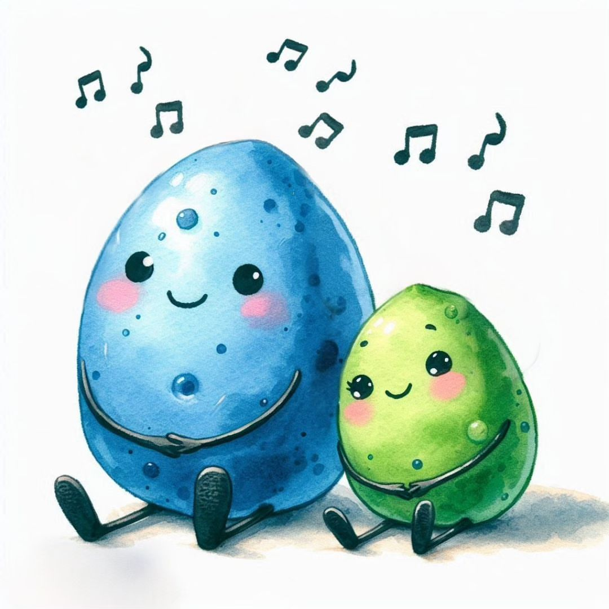

هذا الموقع موقع البطاطس الزرقاء الرسمي


ما هي البطاطس الزرقاء؟
- من مئة وخمسين تيكليون سنة، كان هناك كائن يُعرف باسم بطوس. كان ينتمي إلى فصيلة تُدعى البطاطس الزرقاء. كان بطوس كائنًا قويًا بشكل فوق الطبيعي، وهو الكائن الوحيد الذي كان قادرًا على التكاثر بشكل تلقائي. نتيجة لذلك، ظهرت كائنات جديدة، أحدها يُدعى رجل البطاطس والآخر امرأة البطاطس، وهما السبب في وجود البطاطس الزرقاء. كان رجل البطاطس وامرأة البطاطس من أقوى الكائنات في الكون بفضل قوتهم الجسدية والعقلية والتكنولوجية الهائلة. كان لديهم معرفة واسعة في جميع مجالات الكون، وعاشوا على الكوكب الأزرق في بُعد أزرق، على بُعد مليارات السنوات الضوئية من الأرض.
البطاطس الزرقاء هي بطاطس بس زرقاء. ده رابط للبطاطس الزرقاء الرسمية على كوكب الارض